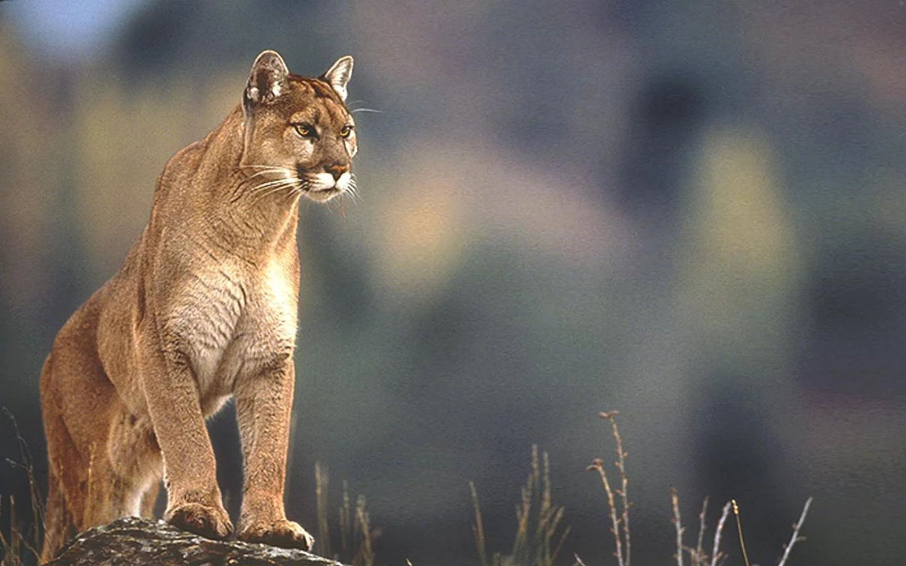

|
El puma es un mamífero carnívoro de la familia Felidae, nativo de América. Es el segundo felino más grande del continente, después del jaguar, y el cuarto más grande del mundo, después del tigre y el león. Su tamaño varía según la región; en el norte, los machos pueden pesar hasta 100 kg, mientras que en el sur, como en México, suelen pesar entre 30 y 60 kg. Su pelaje es uniforme, generalmente de color dorado o grisáceo, y las crías presentan manchas que desaparecen con el tiempo. A diferencia de otros grandes felinos, el puma no puede rugir, pero sí puede ronronear y emitir otros sonidos.>
menu principal
|

 PUMA
PUMA